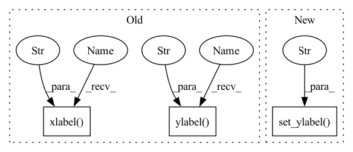

Pattern ID :5936
Before Change
Plot training and validation results over the number of epochs.
plt.plot(history.history["loss"], label="Training Set")
plt.plot(history.history["val_loss"], label="Validation Data)")
plt.ylabel("Categorical Cross Entropy Loss" )
plt.xlabel("Num Epochs" )
plt.title("Performance on Training vs. Validation")
plt.legend(loc="upper left")
if not os.path.exists(plot_dir):After Change
// Plot Accuracy
ax2.plot(history.history["categorical_accuracy"], label="Training Set")
ax2.plot(history.history["val_categorical_accuracy"], label="Validation Data)")
ax2.set_ylabel("Accuracy" )
ax2.set_xlabel("Num Epochs")
// ax2.set_title("Training vs. Validation Accuracy")
// LegendIn pattern: SUPERPATTERN
Frequency: 3
Non-data size: 3
Instances Fragment ID: 20853502
Project Name: stan-hua/cytoimagenet
Commit Name: 1ab297e870800b585b527efea61b1dad69bc8ee4
Time: 2021-08-03
Author: stanley.hua@mail.utoronto.ca
File Name: scripts/model_pretraining.py
M Class Name: AnonimousClass
N Class Name: AnonimousClass
M Method Name: plot_loss(3)
N Method Name: plot_loss(2)
M Parent Class:
N Parent Class:
M File Name: scripts/model_pretraining.py
N File Name: scripts/model_pretraining.py
M Start Line: 93
M End Line: 105
N Start Line: 128
N End Line: 158
Before Change
del tf
plt.figure(figsize=(8, 4))
plt.imshow(att.detach().numpy(), interpolation="nearest", aspect="auto", origin="lower")
plt.xlabel("Inputs" )
plt.ylabel("Outputs" )
plt.xticks(range(len(att[0])), labels=phones)
plt.tight_layout()
if not os.path.exists(os.path.join(att_dir, "attention_plots")):
os.makedirs(os.path.join(att_dir, "attention_plots"))After Change
ax[1].imshow(bin_att.detach().numpy(), interpolation="nearest", aspect="auto", origin="lower")
ax[1].set_xlabel("Inputs")
ax[0].xaxis.set_visible(False)
ax[0].set_ylabel("Outputs" )
ax[1].set_ylabel("Outputs")
ax[1].set_xticks(range(len(att[0])))
ax[1].set_xticklabels(labels=[phone for phone in phones])
ax[0].set_title("Soft-Attention") Fragment ID: 20853503
Project Name: digitalphonetics/ims-toucan
Commit Name: f4b6225ffb1360b67aca1559ae7fb18b17788dbf
Time: 2021-09-26
Author: florian.lux@ims.uni-stuttgart.de
File Name: TrainingInterfaces/Text_to_Spectrogram/Tacotron2/tacotron2_train_loop.py
M Class Name: AnonimousClass
N Class Name: AnonimousClass
M Method Name: plot_attention(7)
N Method Name: plot_attention(7)
M Parent Class:
N Parent Class:
M File Name: TrainingInterfaces/Text_to_Spectrogram/Tacotron2/tacotron2_train_loop.py
N File Name: TrainingInterfaces/Text_to_Spectrogram/Tacotron2/tacotron2_train_loop.py
M Start Line: 30
M End Line: 39
N Start Line: 29
N End Line: 53
Before Change
plt.fill_between(epoch,emin,emax,alpha=0.5,color="/f4")
plt.plot(epoch,obs_dict["energy"],color="/�")
plt.grid()
plt.xlabel("Number of epoch" )
plt.ylabel("Energy" )
plt.show()
def plot_wf_1d(net,grad=False,hist=False,sol=None):
After Change
ax.grid()
ax.set_xlabel("Number of epoch")
ax.set_ylabel("Energy" )
if show_plot:
plt.show()
Fragment ID: 20853504
Project Name: nlesc-jcer/qmctorch
Commit Name: 157db4eaa87f1f692ae29b423ac3cb8bcb8873f9
Time: 2019-06-17
Author: nicolas.gm.renaud@gmail.com
File Name: pyCHAMP/solver/plot.py
M Class Name: AnonimousClass
N Class Name: AnonimousClass
M Method Name: plot_observable(3)
N Method Name: plot_observable(1)
M Parent Class:
N Parent Class:
M File Name: pyCHAMP/solver/plot.py
N File Name: pyCHAMP/solver/plot.py
M Start Line: 10
M End Line: 23
N Start Line: 15
N End Line: 49